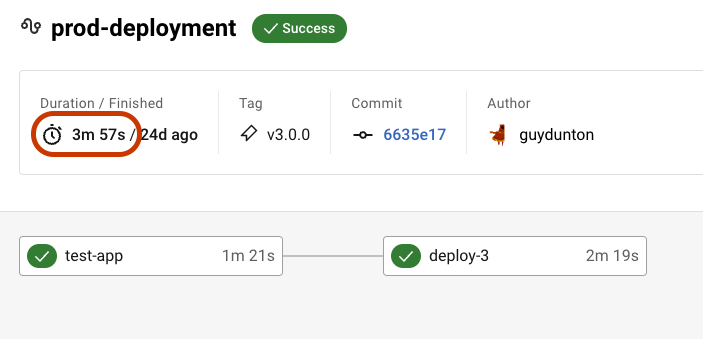
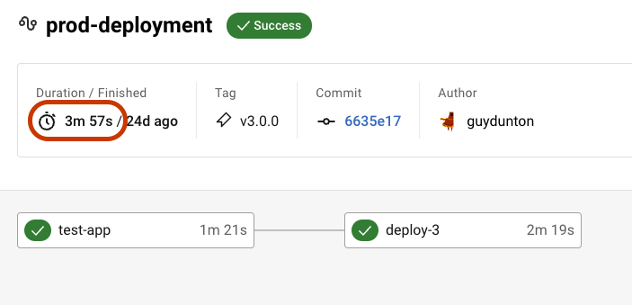

Modern unit testing sucks
An opinionated view on testing code
- What are the problems with poorly written tests
- Mocking & Coupling
- Automated testing
- Joyful coding
What do tests do?
Tests help ensure you code works both before and after you make a change
Who's experienced a tiny change causing many tests to fail to compile or pass?
The effects of poor testing
- Changes are harder to make
- PRs will be larger than needed requiring more time
- Refactoring code will be harder which will slow down new features
- Rather than reuse code you will see code bloat as small variants in behaviour require copies of existing code
- You will introduce bugs
Remember that developers will copy existing patterns
Mocking &
function parseData() {
return 42;
}
test('parseData works', () => {
const data = parseData();
expect(data).toBe(42);
});
interface Response {
status: number;
}
function parseData(): Response {
return {
status: 200
};
}
test('parseData works', () => {
const res = parseData();
expect(res.status).toBe(200);
});
const dbConnection = new DBConnection();
test('dbConnection', () => {
dbConnection.setDestination('www.economist.com/db:5432');
expect(dbConnection.getData()).toBe('...');
});
class DBService {
static async fetchData(c: DBConnection) {
const data = await c.getData();
// ...
}
}
test('dbConnection', async () => {
const dbConnection = new DBConnection();
const getMock = jest.mock(dbConnection, 'getData');
getMock.mockResolvedValue('...');
const data = await DBService.fetchData(dbConnection);
expect(data).toBe('...');
});
class DBService {
static async fetchData(c: DBConnection) {
const data = await c.getData('...');
// ...
}
}
test('dbConnection', () => {
const dbConnection = new DBConnection();
const getMock = jest.mock(dbConnection, 'getData');
getMock.mockResolvedValue('...');
await DBService.fetchData(dbConnection);
expect(getMock).toHaveBeenCalledWith('');
});
Are mocking frameworks a good idea?
Removing barriers to entry can sometimes be a bad thing
interface INetworkConnection {}
class NetworkConnection implements INetworkConnection {}
class MockNetworkConnection implements INetworkConnection {}
class ImageFetcher {
static Image fetchImage(conn: INetworkConnection)
}
var mockConn = new MockNetworkConnection();
var image = ImageFetcher.fetchImage(mockConn);
Automated Testing
The lines between an integration test & a unit test feel a little blurry
"Unit tests must be completely isolated from dependencies"
Back to Basics
Why do we test things?
Automated tests - Goals
- Ensure our code behaves correctly
- Avoid directly testing things we plan to change
- Automated test should be as close to prod as possible
- We want our tests to run quickly which requires parallelization
Case study 1: CP2-API
Case study 1: CP2-API
it('can be queried using findTag', async () => {
const [prisma, server] = setupTestServer();
const context = makeTestDataSourceContext(
DatabaseClient.fromPrisma(prisma),
{ scopes: [Scope.Read] }
);
prisma.tag.create({
data: {
id: 'tag-id',
source_id: '123',
source_type: SourceType.CUE,
slug: 'tag-name',
name: 'Tag Name',
description: 'tag description',
},
});
const result = await server.executeOperation(
{
query: print(gql`
query FindTag {
findTag(id: "tag-id") {
id
description
}
}
`),
},
{ contextValue: context }
);
assert(result.body.kind === 'single');
const data = result.body.singleResult.data;
const tag = data?.findTag;
expect(tag?.id).toBe('tag-id');
expect(tag?.description).toBe('tag description');
});The downsides
Tests can be difficult to setup
You can be testing lots of things at once
Edge cases are harder to test
Case study 2: Rust-GB

let game = Game::new([0x01, 0xFB, 0x45, /* ... */]);
let gameboy = Gameboy::new(game);
for _ in 0..10000 {
gameboy.run_cycle();
}
let screen_data = gameboy.get_screen_data();
assert_eq!(screen_data[0], Color::White);
assert_eq!(screen_data[1], Color::Light);
// ...
#[test]
fn test_nop_instruction() {
let mut gb = Gameboy::new(vec![0x00]);
let cycles = gb.step_once();
assert_eq!(
gb.get_register_16(RegisterLabel16::ProgramCounter),
0x001
);
assert_eq!(cycles, 4);
}
CP2-API revisited
There are issues with very large end-to-end tests
- Tests can be complicated to write
- Testing edge cases is difficult
- Failures are harder to diagnose
Hello again integration tests 👋
Integration tests test the portions of the codebase between chunks
Is there a need for "real" databases?
If these gaps between chunks can be very small do you need a test for it?
What if this is our integration point?
let opcode = gameboy.get_next_instruction();
cpu.run_opcode(opcode);
I get paid for code that works, not for tests, so my philosophy is to test as little as possible to reach a given level of confidence... If I don't typically make a kind of mistake...I don't test for itKent Beck: https://stackoverflow.com/questions/153234/how-deep-are-your-unit-tests/
Consider your context
 

My story of joyful coding
Tests looked like this:
// LD (HL+), A
let mut gb = Gameboy::new(vec![0x22, 0x00]);
gb.set_register_16(RegisterLabel16::HL, 0x0001);
gb.set_register_8(RegisterLabel8::A, 0x12);
let cycles = gb.step_once();
assert_eq!(cycles, 8);
assert_eq!(gb.get_register_16(RegisterLabel16::HL), 0x02);
assert_eq!(gb.get_memory_at(0x01), 0x12);
Create gameboy & game
Gameboy decodes opcode
Opcode is run
Check the register state
Create gameboy & game
Gameboy decodes opcode
Check opcode is correct
Create opcode by hand
Opcode is run
Check the register state
let opcode = OpCode::new(Category::XOR, [
Argument::Register8Constant(RegisterLabel8::B),
Argument::None,
]);
let mut cpu = CPU::new();
let mut memory = vec![0x0; 0xFFFF];
cpu.write_8_bits(RegisterLabel8::A, 0x01);
cpu.write_8_bits(RegisterLabel8::B, 0x00);
cpu.write_8_bits(RegisterLabel8::F, 0b1111_0000);
opcode.run(&mut cpu, MemoryAdapter::new(&mut memory));
assert_eq!(cpu.read_8_bits(RegisterLabel8::A), 0x01);let xor_opcode = |register| {
OpCode::new(
Category::XOR,
[Argument::Register8Constant(register), Argument::None],
)
};
assert_eq!(decode(&[0xA8]), xor_opcode(RegisterLabel8::B));
assert_eq!(decode(&[0xA9]), xor_opcode(RegisterLabel8::C));
assert_eq!(decode(&[0xAA]), xor_opcode(RegisterLabel8::D));
assert_eq!(decode(&[0xAB]), xor_opcode(RegisterLabel8::E));
assert_eq!(decode(&[0xAC]), xor_opcode(RegisterLabel8::H));
assert_eq!(decode(&[0xAD]), xor_opcode(RegisterLabel8::L));
assert_eq!(decode(&[0xAF]), xor_opcode(RegisterLabel8::A));The process
- Switching was a large PR
- All existing tests continued to work
- Only 3 test files were changed
Rant almost over
Beware
jest.fn()
Using Docker for your integration tests is a cop-out
Tests that are coupled with implementation details make code harder to change
Joyful code is tested in a way that makes change easier